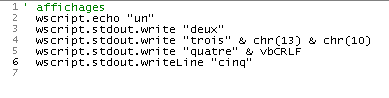
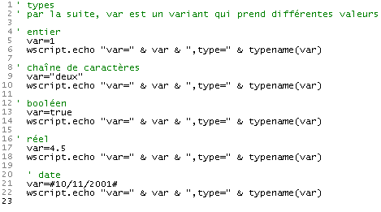
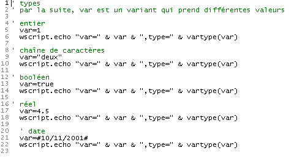
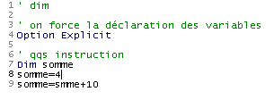
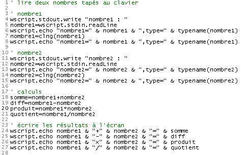
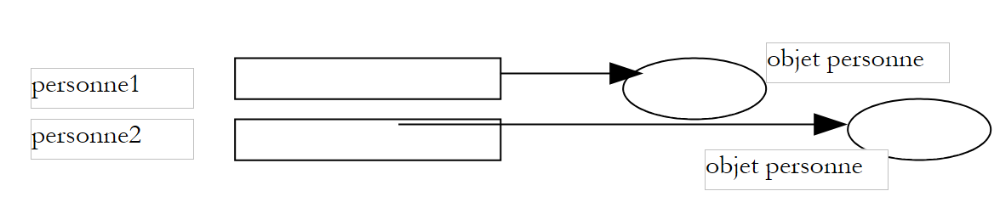
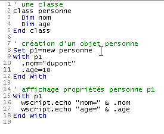
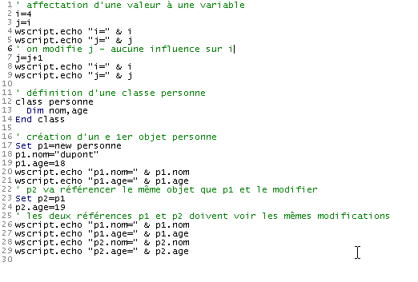
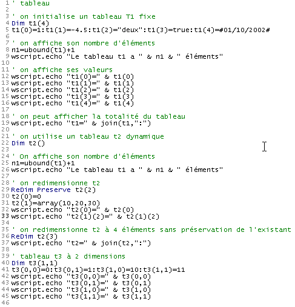

3. Nozioni di base sulla programmazione in VBScript
Dopo aver descritto i possibili contesti di esecuzione per uno script VBScript, passeremo ora a discutere il linguaggio stesso. Da questo punto in poi, faremo riferimento alle seguenti condizioni:
- il contenitore dello script è WSH
- lo script è contenuto in un file con estensione .vbs
Per introdurre un concetto, procediamo generalmente come segue:
- introduciamo il concetto, se necessario
- presentiamo un programma illustrativo insieme ai suoi risultati
- commentiamo i risultati e il programma, se necessario
I contenitori VBScript non distinguono tra maiuscole e minuscole nel testo dello script. Pertanto, è possibile scrivere sia wscript.echo "hello" che WSCRIPT.ECHO "hello".
I programmi presentati di seguito generano molti output sullo schermo, quindi rivedremo i metodi di output dell'oggetto wscript.
3.1. Visualizzazione delle informazioni
Abbiamo già utilizzato il metodo echo dell'oggetto wscript, ma esistono altri metodi per scrivere sullo schermo, come mostrato nello script seguente:
Programma | Risultati |
 |
Si prega di tenere presente quanto segue:
- Qualsiasi testo che segue un apostrofo viene considerato come un commento dello script e non viene interpretato da WSH (riga 1).
- Il metodo echo stampa i propri argomenti e passa alla riga successiva, così come il metodo writeLine (righe 2 e 6)
- Il metodo write stampa i propri argomenti e non passa alla riga successiva (riga 3)
- Un carattere di fine riga è rappresentato dalla sequenza di due caratteri ASCII 13 e 10. Pertanto, la riga 4 è rappresentata dall'espressione chr(13) & chr(10), dove chr(i) è il carattere ASCII i e & è l'operatore di concatenazione delle stringhe. Pertanto, "chat" & "eau" è la stringa "chateau".
- Il carattere di fine riga può essere rappresentato più facilmente dalla costante vbCRLF (riga 5)
3.2. : Scrittura di istruzioni in uno script VBScript
Per impostazione predefinita, viene scritta un'istruzione per riga. Tuttavia, è possibile scrivere più istruzioni su una singola riga separandole con il carattere: come in inst1:inst2:inst3. Se una riga è troppo lunga, può essere suddivisa in parti. In questo caso, le diverse parti dell'istruzione devono essere terminate dai due caratteri (spazio)_. Rivediamo l'esempio precedente riscrivendo le istruzioni in modo diverso:
Programma | Risultati |
 |
3.3. Scrivere con la funzione msgBox
Sebbene in questo documento utilizziamo l'oggetto wscript quasi esclusivamente per visualizzare testo sullo schermo, esiste una funzione più sofisticata per visualizzare informazioni in una finestra. Si tratta della funzione msgbox, che viene generalmente utilizzata con tre parametri:
msgbox messaggio, icone+pulsanti, titolo
- messaggio è il testo del messaggio da visualizzare
- icone+pulsanti (opzionale) è in realtà un numero che specifica il tipo di icona e i pulsanti da inserire nella finestra del messaggio. Questo numero è molto spesso la somma di due numeri: il primo determina l'icona, il secondo i pulsanti
- title è il testo da inserire nella barra del titolo della finestra del messaggio
I valori da utilizzare per specificare l'icona e i pulsanti nella finestra di visualizzazione sono i seguenti:
Costante | Valore | Descrizione |
vbOKOnly | 0 | Visualizza solo il pulsante OK. |
vbOKCancel | 1 | Visualizza i pulsanti OK e Annulla. |
vbAbortRetryIgnore | 2 | Visualizza i pulsanti Annulla, Riprova e Ignora. |
vbYesNoCancel | 3 | Visualizza i pulsanti Sì, No e Annulla. |
vbYesNo | 4 | Visualizza i pulsanti Sì e No. |
vbRetryCancel | 5 | Visualizza i pulsanti Riprova e Annulla. |
vbCritical | 16 | Visualizza l'icona Messaggio critico. |
vbQuestion | 32 | Visualizza l'icona Richiesta di avviso. |
vbExclamation | 48 | Visualizza l'icona del messaggio di avviso. |
vbInformation | 64 | Visualizza l'icona del messaggio di informazione. |
vbDefaultButton1 | 0 | Il primo pulsante è il pulsante predefinito. |
vbDefaultButton2 | 256 | Il secondo pulsante è il pulsante predefinito. |
vbDefaultButton3 | 512 | Il terzo pulsante è il pulsante predefinito. |
vbDefaultButton4 | 768 | Il quarto pulsante è il pulsante predefinito. |
vbApplicationModal | 0 | Applicazione modale; l'utente deve rispondere al messaggio prima di continuare a lavorare nell'applicazione corrente. |
vbSystemModal | 4096 | Modale di sistema; tutte le applicazioni vengono sospese finché l'utente non risponde al messaggio. |
Ecco alcuni esempi:
Programma | ||||||||||||||||||||||||
 | ||||||||||||||||||||||||
Risultati | ||||||||||||||||||||||||
| ||||||||||||||||||||||||


In alcuni casi, viene visualizzata una finestra informativa che funge anche da finestra di input. Se viene posta una domanda, ad esempio, vogliamo sapere se l'utente ha cliccato sul pulsante Sì o sul pulsante No. La funzione msgBox restituisce un risultato che non abbiamo utilizzato nel programma precedente. Questo risultato è un numero intero che rappresenta il pulsante su cui l'utente ha cliccato per chiudere la finestra di visualizzazione:
Costante | Valore | Pulsante selezionato |
vbOK | 1 | OK |
vbCancel | 2 | Annulla |
vbAbort | 3 | Interrompi |
vbRetry | 4 | Riprova |
vbIgnora | 5 | Ignora |
vbYes | 6 | Sì |
vbNo | 7 | No |
Il programma seguente mostra come utilizzare il risultato della funzione msgBox. Viene visualizzata quattro volte una finestra con i pulsanti Sì, No e Annulla. Rispondi come segue:
- Fare clic su Sì
- fare clic su No
- fare clic su Annulla
- chiudere la finestra senza utilizzare alcun pulsante. Il programma mostra che ciò equivale all'utilizzo del pulsante Annulla.
Programma | ||||
 | ||||
Risultati | ||||
|


3.4. Tipi di dati utilizzabili in VBScript
VBScript riconosce un solo tipo di dati: il variante. Il valore di un variante può essere un numero (4, 10,2), una stringa ("ciao"), un valore booleano (vero/falso), una data (#01/01/2002#), l'indirizzo di un oggetto o una raccolta di tutti questi tipi di dati inseriti in una struttura chiamata array.
Esaminiamo il seguente programma e i suoi risultati:
Programma | Risultati |
 |
Commenti:
- Diversi linguaggi di programmazione (C, C++, Pascal, Java, C#, ecc.) richiedono che una variabile venga dichiarata prima di essere utilizzata. Tale dichiarazione comporta la specificazione del nome della variabile e del tipo di dati che può contenere (intero, virgola mobile, stringa, data, booleano, ecc.). La dichiarazione delle variabili consente di:
- determinare lo spazio di memoria richiesto dalla variabile, poiché tipi di dati diversi richiedono quantità di memoria diverse
- verificare la coerenza del programma. Ad esempio, se i è un numero intero e c è una stringa, moltiplicare i per c non ha senso. Se i tipi delle variabili i e c sono stati dichiarati dal programmatore, il programma responsabile dell'analisi del codice prima dell'esecuzione può segnalare tale incoerenza.
Come la maggior parte dei linguaggi di scripting a tipo di dati unico (Perl, Python, JavaScript, ecc.), VBScript consente di utilizzare le variabili senza dichiarazione. Questo è ciò che è stato fatto nell'esempio sopra riportato.
- Si noti la sintassi dei diversi tipi di dati
- 10.2 alla riga 10 (punto decimale, non virgola). Si noti che 10.2 viene visualizzato sullo schermo.
- 1,4e-2 alla riga 13 (notazione scientifica). Viene visualizzato il numero 0,014
- [#01/10/2002#] (riga 26) per rappresentare la data 10 gennaio 2002. VBScript utilizza quindi il formato #mm/dd/yyyy# per rappresentare la data dd del mese mm dell'anno yyyy
- i valori booleani true e false nelle righe 31 e 34. Questi due valori sono rappresentati rispettivamente dai numeri interi -1 e 0, come mostrato nell'output delle righe 32 e 35. Quando un valore booleano viene concatenato con una stringa, questi valori diventano rispettivamente le stringhe "True" e "False", come mostrato nelle righe 33 e 36. Si noti che l'operatore di concatenazione & può essere utilizzato per concatenare non solo stringhe.
- Poiché una variabile v non ha un tipo assegnato, può contenere in successione valori di tipi diversi nel tempo.
3.5. L : Sottotipi del tipo Variant
Ecco cosa dice la documentazione ufficiale sui diversi tipi di dati che un variant può contenere:
Oltre alla semplice distinzione tra numeri e stringhe, un Variant è in grado di distinguere tra diversi tipi di informazioni numeriche. Ad esempio, alcune informazioni numeriche rappresentano una data o un'ora. Quando queste informazioni vengono utilizzate insieme ad altri dati relativi a date o ore, il risultato viene sempre espresso come data o ora. Esistono anche altri tipi di informazioni numeriche, che vanno dai valori booleani ai grandi numeri in virgola mobile. Queste diverse categorie di informazioni che possono essere contenute in un Variant sono sottotipi. Nella maggior parte dei casi, è sufficiente inserire i dati in un Variant e questo si comporterà nel modo più appropriato in base a tali dati.
La tabella seguente elenca i diversi sottotipi che possono essere contenuti in un Variant.
Sottotipo | Descrizione |
Vuoto | La Variant non è inizializzata. Il suo valore è zero per le variabili numeriche e una stringa nulla ("") per le variabili stringa. |
Null | La variante contiene intenzionalmente dati errati. |
Booleano | |
Byte | Contiene un numero intero compreso tra 0 e 255. |
Integer | Contiene un numero intero compreso tra -32.768 e 32.767. |
Valuta | Da -922.337.203.685.477,5808 a 922.337.203.685.477,5807. |
Long | Contiene un numero intero compreso tra -2.147.483.648 e 2.147.483.647. |
Singolo | Contiene un numero in virgola mobile a precisione singola compreso tra -3,402823E38 e -1,401298E-45 per i valori negativi; tra 1,401298E-45 e 3,402823E38 per i valori positivi. |
Doppio | Contiene un numero in virgola mobile a doppia precisione compreso tra -1,79769313486232E308 e -4,94065645841247E-324 per i valori negativi; da 4,94065645841247E-324 a 1,79769313486232E308 per i valori positivi. |
Data (Ora) | Contiene un numero che rappresenta una data compresa tra il 1° gennaio 100 e il 31 dicembre 9999. |
Stringa | Contiene una stringa di lunghezza variabile limitata a circa 2 miliardi di caratteri. |
Oggetto | Contiene un oggetto. |
Errore | Contiene un numero di errore. |
3.6. C : Determina il tipo esatto dei dati contenuti in una variabile
Una variabile di tipo variant può contenere dati di vario tipo. A volte è necessario conoscere la natura esatta di questi dati. Se in un programma scriviamo product = number1 \* number2, supponiamo che number1 e number2 siano entrambi valori numerici. A volte non ne siamo sicuri, perché questi valori possono provenire dall'input da tastiera, da un file o da qualche altra fonte esterna. Dobbiamo quindi verificare la natura dei dati memorizzati in number1 e number2. La funzione typename(var) ci permette di determinare il tipo di dati contenuti nella variabile var. Ecco alcuni esempi:
Programma | Risultati |
 |
Un'altra funzione possibile è vartype(var), che restituisce un numero che rappresenta il tipo dei dati contenuti nella variabile var:
Costante | Valore | Descrizione |
vbEmpty | 0 | Vuoto (non inizializzato) |
vbNull | 1 | Null (nessun dato valido) |
vbInteger | 2 | Intero |
vbLong | 3 | Numero intero lungo |
vbSingle | 4 | Numero in virgola mobile a precisione singola |
vbDouble | 5 | Numero in virgola mobile a doppia precisione |
vbCurrency | 6 | Valuta |
vbDate | 7 | Data |
vbString | 8 | String |
vbObject | 9 | Oggetto di automazione |
vbError | 10 | Errore |
vbBoolean | 11 | Booleano |
vbVariant | 12 | Variant (utilizzato solo con gli array Variant) |
vbDataObject | 13 | Oggetto non di automazione |
vbByte | 17 | Byte |
vbArray | 8192 | Array |
Nota: queste costanti sono definite da VBScript. Di conseguenza, i nomi possono essere utilizzati in qualsiasi punto del codice al posto dei valori effettivi.
Le informazioni di cui sopra provengono dalla documentazione di VBScript. A volte sono errate, probabilmente a causa del copia-incolla dalla documentazione di VB. La funzione vartype di VBScript esegue solo una parte di ciò che è descritto sopra.
Il programma precedente, riscritto per vartype, produce i seguenti risultati:
Programma | Risultati |
 |
3.7. D Dichiarazione delle variabili utilizzate dallo script
Abbiamo detto che non è obbligatorio dichiarare le variabili utilizzate dallo script. In questo caso, se scriviamo:
1) somme=4
...
2) somme=smme+10
Se nella riga 2 è presente un errore di battitura, ad esempio "smme" invece di "somme", VBScript non segnalerà alcun errore. Presumerà che "smme" sia una nuova variabile. La creerà e, nel contesto della riga 2, la utilizzerà inizializzandola a 0.
Questo tipo di errori può essere molto difficile da individuare. Pertanto, è consigliabile imporre la dichiarazione delle variabili utilizzando la direttiva option explicit inserita all'inizio dello script. In questo modo, ogni variabile dovrà essere dichiarata con un'istruzione dim prima del suo primo utilizzo:
option explicit
...
dim somme
1) somme=4
...
2) somme=smme+10
In questo esempio, VBScript segnalerà la presenza di una variabile smme non dichiarata nel punto 2), come mostrato nell'esempio seguente:
Programma | Risultati |
 |
Sebbene nelle brevi esempi contenuti in questo documento le variabili non siano per lo più dichiarate, sarà necessario dichiararle non appena scriveremo i nostri primi script significativi. La direttiva Option Explicit verrà quindi utilizzata sistematicamente.
3.8. Funzioni di conversione di VBScript
VBScript converte i dati di tipo variant in stringhe, numeri, valori booleani, ecc., a seconda del contesto. Il più delle volte questo funziona bene, ma a volte porta a risultati inaspettati, come vedremo più avanti. Potrebbe quindi essere opportuno "forzare" il tipo di dati del variant. VBScript dispone di funzioni di conversione che trasformano un'espressione in vari tipi di dati. Eccone alcune:
Cint (espressione) | converte l'espressione in un intero corto |
Clng (espressione) | converte l'espressione in un intero lungo |
Cdbl (espressione) | converte l'espressione in un numero a doppia precisione |
Csng (espressione) | converte l'espressione in un numero in virgola mobile a precisione singola (single) |
Ccur (espressione) | converte l'espressione in valuta |
Ecco alcuni esempi:

3.9. dati digitati sulla tastiera
L'oggetto wscript consente a uno script di recuperare i dati immessi tramite la tastiera. Il metodo wscript.stdin.readLine legge una riga di testo immessa tramite la tastiera e confermata premendo il tasto "Invio". Questa riga letta può essere assegnata a una variabile.
Programma | Risultati |
 | |
Commenti:
- Nella colonna dei risultati e nella riga [Inserisci il tuo nome: st], st è il testo inserito dall'utente.
Se il testo digitato sulla tastiera rappresenta un numero, viene comunque trattato principalmente come una stringa di caratteri, come mostrato nell'esempio seguente:
Programma | Risultati |
 |
Se questo numero viene utilizzato in un'operazione aritmetica, VBScript convertirà automaticamente la stringa in un numero, ma non sempre. Vediamo il seguente esempio:
Programma | Risultati |
 |
Nei risultati, vediamo che la riga 8 dello script non è stata eseguita come previsto, perché (purtroppo) in VBScript l'operatore + ha due significati: l'addizione di due numeri o la concatenazione di due stringhe (le due stringhe vengono unite insieme). Abbiamo visto in precedenza che i numeri digitati sulla tastiera venivano letti come stringhe e che VBScript li convertiva in numeri quando necessario. Lo ha fatto correttamente per le operazioni -, *, /, che possono coinvolgere solo numeri, ma non per l'operatore +, che può coinvolgere anche stringhe. In questo caso, ha supposto che volessimo concatenare stringhe.
Una soluzione semplice a questo problema consiste nel convertire le stringhe in numeri non appena vengono lette, come illustrato nel seguente miglioramento del programma precedente:
Programma | Risultati |
 |
3.10. S Inserimento dei dati con la funzione inputBox
Potresti voler inserire dati tramite un'interfaccia grafica anziché tramite la tastiera. In tal caso, utilizza la funzione inputBox. Questa funzione accetta molti parametri, ma solo i primi due sono comunemente utilizzati:
response = inputBox(message, title)
- message: la domanda che si pone all'utente
- title (opzionale): il titolo che si assegna alla finestra di immissione
- risposta: il testo digitato dall'utente. Se l'utente ha chiuso la finestra senza rispondere, risposta è una stringa vuota.
Ecco un esempio in cui chiediamo il nome e l'età di una persona. Per il nome, inseriamo le informazioni e facciamo clic su OK. Per l'età, inseriamo anche le informazioni ma facciamo clic su Annulla.
Programma | ||||
 | ||||
Risultati | ||||
|


3.11. U e l'uso di oggetti strutturati
È possibile creare oggetti con metodi e proprietà utilizzando VBScript. Per semplificare, presenteremo qui un oggetto con proprietà ma senza metodi. Consideriamo una persona. Ha molte proprietà che la caratterizzano: altezza, peso, colore della pelle, colore degli occhi, colore dei capelli, ecc. Ci concentreremo solo su due: il nome e l'età. Prima di poter utilizzare gli oggetti, è necessario creare il modello che consentirà di costruirli. In VBScript, questo si fa utilizzando una classe. La classe Person potrebbe essere definita come segue:
class personne
Dim nom,age
End class
È l'istruzione [Dim nome, età] che definisce le due proprietà della classe Person. Per creare copie (chiamate istanze) della classe Person, scriviamo:
Perché non scrivere
Poiché una variabile non può contenere un oggetto, ma solo l'indirizzo dell'oggetto. Quando si scrive set persona1 = nuova persona, si verifica la seguente sequenza di eventi:
- Viene creato un oggetto Person. Ciò significa che gli viene allocata della memoria.
- L'indirizzo di questo oggetto Person viene assegnato alla variabile person1
Abbiamo quindi la seguente struttura di memoria per le variabili person1 e person2:
 |
Per usare una figura retorica, potremmo dire che persona1 è un oggetto persona. Possiamo accettare questa figura retorica se teniamo presente che persona1 è in realtà l'indirizzo di un oggetto persona e non l'oggetto persona stesso.
Abbiamo detto che un oggetto Person ha due proprietà: nome ed età. Come si accede a queste proprietà? Utilizzando la notazione oggetto.proprietà, come spiegato in precedenza. Quindi
person1.name si riferisce al nome della persona 1, e person1.age si riferisce alla sua età. Ecco un breve programma per illustrare questo concetto:
Programma | Risultati |
 |
Il programma precedente potrebbe essere modificato come segue:
Programma | Risultati |
 |
Qui abbiamo utilizzato la struttura with ... end with, che ci permette di "esternalizzare" i nomi degli oggetti nelle espressioni. La struttura with p1 ... end with* nelle righe 9–12 e 15–18 ci permette di usare la sintassi .name invece di p1.name* e .age* invece di p1.age*. Questo semplifica la scrittura di istruzioni in cui lo stesso nome di oggetto viene usato ripetutamente.
3.12. Assegnazione di un valore a una variabile
Esistono due istruzioni per assegnare un valore a una variabile:
- variabile=espressione
- set variabile=espressione
La forma 2 è riservata alle espressioni il cui risultato è un riferimento a un oggetto. Per tutti gli altri tipi di espressioni, è appropriata la forma 1. La differenza tra le due forme è la seguente:
- Nell'istruzione variabile=espressione, la variabile riceve un valore. Se v1 e v2 sono due variabili, scrivendo v1=v2 si assegna il valore di v1 a v2. Ciò comporta la duplicazione di un valore in due posizioni diverse. Se il valore di v2 viene successivamente modificato, il valore di v1 rimane invariato.
 |
- Nell'istruzione `set variable=expression`, a `variable` viene assegnato l'indirizzo di un oggetto. Se `v1` e `v2` sono due variabili e `v2` è l'indirizzo di un oggetto `obj2`, scrivendo `set v1=v2` si assegna il valore di `v1` a `v2`, ovvero l'indirizzo dell'oggetto `obj2`. Quando lo script manipola successivamente v1 e v2, non sono i "valori" di v1 e v2 ad essere manipolati, ma piuttosto gli oggetti "indicati" da v1 e v2 — in questo caso, lo stesso oggetto. Si dice che v1 e v2 sono due riferimenti allo stesso oggetto e che manipolarlo tramite v1 o v2 non fa alcuna differenza. In altre parole, modificando l'oggetto a cui fa riferimento v2 si modifica quello a cui fa riferimento v1.
 |
Ecco un esempio:
Programma | Risultati |
 |
3.13. E : valutazione delle espressioni
I principali operatori utilizzati per valutare le espressioni sono i seguenti:
Tipo di operatori | Operatori | Esempio |
Aritmetici | +,-,*,/ | |
Confronto | <, <= >, >= =,<> | a<>b è vero se a non è uguale a b a=b è vero se a è uguale a b sia a che b possono essere entrambi numeri o entrambe stringhe. In quest'ultimo caso, string1<string2 se string1 precede string2 in ordine alfabetico. Nel confronto tra stringhe, le lettere maiuscole precedono quelle minuscole in ordine alfabetico. |
Logica | e, o, non, xor | Tutti gli operandi qui sono booleani. bool1 o bool2 è vero se bool1 o bool2 è vero bool1 and bool2 è vero se sia bool1 che bool2 sono veri not bool1 è vero se bool1 è falso, e viceversa bool1 xor bool2 è vero se solo uno dei booleani bool1 o bool2 è vero |
Concatenazione | &, + | Non è consigliabile utilizzare l'operatore + per concatenare due stringhe, poiché ciò può essere confuso con l'addizione di due numeri. Pertanto, è opportuno utilizzare solo l'operatore &. |
3.14. C : Controllo dell'esecuzione del programma
3.14.1. E : eseguire azioni in modo condizionale
L'istruzione VBScript utilizzata per eseguire azioni in base al fatto che una condizione sia vera o falsa è la seguente:
L'espressione viene valutata per prima. Questa espressione deve avere un valore booleano. Se il risultato è vero, vengono eseguite le azioni nel blocco then; altrimenti, vengono eseguite le azioni nel blocco else, se presente. |
Ecco un programma che illustra diverse varianti dell'istruzione if-then-else:
Programma | Risultati |
 |
Commenti:
- In VBScript, è possibile scrivere istruzione1:istruzione2:... : istruzionn invece di scrivere un'istruzione per riga. Questa funzionalità è utilizzata, ad esempio, nella riga 10.
3.14.2. E xecuting actions repeatedly
Ciclo con un numero noto di iterazioni |
È possibile uscire da un ciclo for in qualsiasi momento utilizzando l'istruzione exit for. |
Ciclo con un numero sconosciuto di iterazioni |
È possibile uscire da un ciclo do-while in qualsiasi momento utilizzando l'istruzione exit do. |
Il programma riportato di seguito illustra questi punti:
Programma |
 |
Risultati |
|
Nota: durante la fase di sviluppo di un programma, non è raro che il programma entri in un "ciclo infinito", ovvero che non si arresti mai. In genere, il programma esegue un ciclo la cui condizione di uscita non può essere verificata, come nell'esempio seguente:
' infinite loop
i=0
Do While 1=1
i=i+1
wscript.echo i
Loop
' another of the same kind
i=0
Do While true
i=i+1
wscript.echo i
Loop
Se si esegue il programma precedente, il primo ciclo non si interromperà mai da solo. È possibile forzare l'interruzione premendo CTRL-C sulla tastiera (tenendo premuti contemporaneamente i tasti CTRL e C).
3.14.3. Terminare l'esecuzione del programma
L'istruzione wscript.quit n termina il programma restituendo un codice di errore pari a n. In DOS, questo codice di errore può essere verificato utilizzando l'istruzione if ERRORLEVEL n, che restituisce true se il codice di errore restituito dall'ultimo programma eseguito è >=n. Si consideri il seguente programma e i relativi risultati:
 |
Subito dopo l'esecuzione del programma, vengono emessi i seguenti tre comandi DOS:
Il comando DOS 1 verifica se il codice di errore restituito dal programma è >=5. In tal caso, visualizza (echo) 5; altrimenti, nulla.
Il comando DOS 3 verifica se il codice di errore restituito dal programma è >=4. In tal caso, visualizza 4; altrimenti, nulla.
Il comando DOS 5 verifica se il codice di errore restituito dal programma è >=3. In tal caso, visualizza 3; altrimenti, nulla.
Dai risultati visualizzati, possiamo dedurre che il codice di errore restituito dal programma era 4.
3.15. L' a gli array di dati in una variante
Un variante T può contenere un elenco di valori. In tal caso, si dice che si tratta di un array. Un array T ha varie proprietà:
- Si accede all'elemento i dell'array T utilizzando la sintassi T(i), dove i è un numero intero chiamato indice compreso tra 0 e n-1 se T ha n elementi.
- L'indice dell'ultimo elemento dell'array T può essere determinato utilizzando l'espressione ubound(T). Il numero di elementi nell'array T è quindi ubound(T)+1. Questo numero viene spesso indicato come la dimensione dell'array.
- Una variante T può essere inizializzata con un array vuoto utilizzando la sintassi T=array() o con una sequenza di elementi utilizzando la sintassi T=array(element0, element1, ...., elementn)
- È possibile aggiungere elementi a un array T già creato. Per farlo, utilizzare l'istruzione redim preserve T(N), dove N è il nuovo indice dell'ultimo elemento dell'array T. Questa operazione è chiamata ridimensionamento (redim). La parola chiave preserve indica che durante questo ridimensionamento, il contenuto corrente dell'array deve essere conservato. In assenza di questa parola chiave, T viene ridimensionato e i suoi elementi vengono cancellati.
- Un elemento T(i) dell'array T è di tipo variant e può quindi contenere qualsiasi valore, compreso un altro array. In questo caso, la notazione T(i)(j) si riferisce al j-esimo elemento dell'array T(i).
Queste varie proprietà degli array sono illustrate dal seguente programma:
Programma | Risultati |
 |
Commenti
- Qui abbiamo utilizzato una funzione chiamata join, che viene spiegata più dettagliatamente di seguito.
3.16. L' e delle variabili array
In VBScript, esiste un altro modo per utilizzare un array: utilizzando una variabile array. A differenza delle variabili scalari, tale variabile deve essere dichiarata utilizzando un'istruzione dim. Sono possibili varie dichiarazioni:
- dim array(n) dichiara un array statico di n+1 elementi numerati da 0 a n. Questo tipo di array non può essere ridimensionato
- dim array() dichiara un array dinamico vuoto. Deve essere ridimensionato per l'uso con l'istruzione redim, allo stesso modo di un variant contenente un array
- dim array(n,m) dichiara un array bidimensionale con (n+1)*(m+1) elementi. L'elemento (i,j) dell'array è indicato come array(i,j). Si noti la differenza rispetto a un variant, dove lo stesso elemento sarebbe stato indicato come array(i)(j).
Perché esistono due tipi di array che, in definitiva, sono molto simili? La documentazione di VBScript non affronta questo argomento e non indica se uno sia più efficiente dell'altro. D'ora in poi, nei nostri esempi useremo quasi esclusivamente array all'interno di varianti. Tuttavia, vale la pena notare che VBScript deriva dal linguaggio Visual Basic, che a sua volta contiene tipi di dati (intero, doppio, booleano, ecc.). In questo caso, se abbiamo bisogno di utilizzare un array di numeri reali, ad esempio, la variabile array sarà più efficiente della variabile variant. Dovremmo quindi dichiarare qualcosa come dim array(1000) as double per dichiarare un array di numeri reali, o semplicemente dim array() as double se l'array è dinamico.
Ecco un esempio che illustra l'uso delle variabili array:
Programma | Risultati |
 |
3.17. L : le funzioni split e join
Le funzioni split e join consentono di convertire una stringa in un array e viceversa:
- Se T è un array e car è una stringa, join(T,car) è una stringa formata concatenando tutti gli elementi dell'array T, ciascuno separato dal successivo dalla stringa car. Pertanto, join(array(1,2,3),"abcd") produrrà la stringa "1abcd2abcd3"
- Se C è una stringa costituita da una sequenza di campi separati dalla stringa car, la funzione split(C,car) restituisce un array i cui elementi sono le singole parti della stringa C. Pertanto, split("1abcd2abcd3", "abcd") restituirà l'array (1,2,3)
Ecco un esempio:
Programma | Risultati |
| |
3.18. Dizionari
Possiamo accedere a un elemento di un array T quando ne conosciamo l'indice i. È quindi accessibile utilizzando la notazione T(i). Esistono array i cui elementi sono accessibili non tramite un indice ma tramite una stringa. Un tipico esempio di questo tipo di array è un dizionario. Quando cerchiamo il significato di una parola nel "Larousse" o nel "Le petit Robert", vi accediamo tramite la parola. Potremmo rappresentare questo dizionario come un array a due colonne:
parola1 | descrizione1 |
parola2 | descrizione2 |
parola3 | descrizione3 |
.... |
Potremmo quindi scrivere cose del tipo:
dizionario("parola1") = "descrizione1"
dizionario("parola2") = "descrizione2"
...
Questo funziona in modo simile a un array, tranne per il fatto che gli indici dell'array non sono numeri interi ma stringhe. Questo tipo di array è chiamato dizionario (o array associativo, tabella hash), e gli indici stringa sono chiamati chiavi del dizionario. I dizionari sono utilizzati molto frequentemente nel mondo dell'informatica. Tutti noi abbiamo una tessera di previdenza sociale con un numero sopra. Questo numero ci identifica in modo univoco e fornisce accesso alle informazioni che ci riguardano. Nel modello dictionary("key")="information", "key" sarebbe il numero di previdenza sociale e "information" sarebbero tutte le informazioni su di noi memorizzate nei computer della previdenza sociale.
In Windows, esiste un oggetto ActiveX chiamato "Scripting.Dictionary" che consente di creare e gestire i dizionari. Un oggetto ActiveX è un componente software che espone un'interfaccia utilizzabile da programmi scritti in vari linguaggi, purché siano conformi allo standard degli oggetti ActiveX. L'oggetto Scripting.Dictionary può quindi essere utilizzato dai linguaggi di programmazione di Windows come JavaScript, Perl, Python, C, C++, VB, VBA e altri, non solo VBScript.
1 | Un oggetto Scripting.Dictionary viene creato utilizzando la seguente istruzione set dico=wscript.CreateObject("Scripting.Dictionary") oppure semplicemente set dico=CreateObject("Scripting.Dictionary") CreateObject è un metodo dell'oggetto WScript utilizzato per creare istanze di oggetti ActiveX. La versione 2 mostra che wscript può essere un oggetto implicito. Quando un metodo non può essere "risolto" in un oggetto, il contenitore WSH tenterà di risolverlo nell'oggetto wscript. |
2 | Una volta creato il dizionario, possiamo aggiungervi elementi utilizzando il metodo add: dico.add "key",value creerà una nuova voce nel dizionario associata alla chiave "key". Il valore associato è un Variant contenente qualsiasi dato. |
3 | Per recuperare il valore associato a una determinata chiave, utilizziamo il metodo item del dizionario: var = dic.item("key") oppure set var = dic.item("key") se il valore associato alla chiave è un oggetto. |
4 | Tutte le chiavi del dizionario possono essere recuperate in un array variabile utilizzando il metodo `keys`: keys = dic.keys keys è un array i cui elementi possono essere iterati. |
5 | Tutti i valori del dizionario possono essere recuperati in un array variabile utilizzando il metodo `items`: values = dic.items items è un array i cui elementi possono essere iterati. |
6 | È possibile verificare l'esistenza di una chiave utilizzando il metodo exists: dico.exists("key") restituisce true se la chiave "key" esiste nel dizionario |
7 | È possibile rimuovere una voce dal dizionario (chiave+valore) utilizzando il metodo remove: dico.remove("key") rimuove la voce dal dizionario associata alla chiave "key". dico.removeall rimuove tutte le chiavi, ovvero svuota il dizionario. |
Il programma seguente utilizza queste diverse opzioni:
Programma
' creating and using a dictionary
Set dico=CreateObject("Scripting.Dictionary")
' dico filling
dico.add "clé1","valeur1"
dico.add "clé2","valeur2"
dico.add "clé3","valeur3"
' number of elements
wscript.echo "Le dictionnaire a " & dico.count & " éléments"
' kEY LIST
wscript.echo "liste des clés"
cles=dico.keys
For i=0 To ubound(cles)
wscript.echo cles(i)
Next
' list of values
wscript.echo "liste des valeurs"
valeurs=dico.items
For i=0 To ubound(valeurs)
wscript.echo valeurs(i)
Next
' list of keys and values
wscript.echo "liste des clés et valeurs"
cles=dico.keys
For i=0 To ubound(cles)
wscript.echo "dico(" & cles(i) & ")=" & dico.item(cles(i))
Next
' item search
' key1
If dico.exists("clé1") Then
wscript.echo "La clé clé1 existe dans le dictionnaire et la valeur associée est " & dico.item("clé1")
Else
wscript.echo "La clé clé1 n'existe pas dans le dictionnaire"
End If
' key4
If dico.exists("clé4") Then
wscript.echo "La clé clé4 existe dans le dictionnaire et la valeur associée est " & dico.item("clé4")
Else
wscript.echo "La clé clé4 n'existe pas dans le dictionnaire"
End If
' remove key 1
dico.remove("clé1")
' list of keys and values
wscript.echo "liste des clés et valeurs après suppression de clé1"
cles=dico.keys
For i=0 To ubound(cles)
wscript.echo "dico(" & cles(i) & ")=" & dico.item(cles(i))
Next
' we do away with everything
dico.removeall
' list of keys and values
wscript.echo "liste des clés et valeurs après suppression de tous les éléments"
cles=dico.keys
For i=0 To ubound(cles)
wscript.echo "dico(" & cles(i) & ")=" & dico.item(cles(i))
Next
' end
wscript.quit 0
Risultati
Le dictionnaire a 3 éléments
liste des clés
clé1
clé2
clé3
liste des valeurs
valeur1
valeur2
valeur3
liste des clés et valeurs
dico(clé1)=valeur1
dico(clé2)=valeur2
dico(clé3)=valeur3
La clé clé1 existe dans le dictionnaire et la valeur associée est valeur1
La clé clé4 n'existe pas dans le dictionnaire
liste des clés et valeurs après suppression de clé1
dico(clé2)=valeur2
dico(clé3)=valeur3
liste des clés et valeurs après suppression de tous les éléments
3.19. Ordinamento di un array o di un dizionario
È comune voler ordinare un array o un dizionario in ordine crescente o decrescente in base ai valori o, nel caso di un dizionario, in base alle chiavi. Sebbene la maggior parte dei linguaggi disponga di funzioni di ordinamento, in VBScript non sembrano essercene. Si tratta di una lacuna.
3.20. Argomenti del programma
È possibile richiamare un programma VBScript passando dei parametri, come in:
Questo permette all'utente di passare informazioni al programma. In che modo il programma recupera queste informazioni? Diamo un'occhiata al seguente programma:
Programma | Risultati |
 |
Commenti
- WScript.Arguments è la raccolta degli argomenti passati allo script
- Una raccolta C è un oggetto che possiede
- una proprietà count, che rappresenta il numero di elementi nella collezione
- un metodo C(i) che restituisce l'i-esimo elemento della collezione
3.21. Una prima applicazione: IMPOSTE
Proponiamo di scrivere un programma per calcolare l'imposta di un contribuente. Consideriamo il caso semplificato di un contribuente che deve dichiarare solo il proprio stipendio:
- Il numero di quote per il dipendente viene calcolato come segue: nbParts = nbEnfants / 2 + 1 se il dipendente è celibe, oppure nbEnfants / 2 + 2 se il dipendente è coniugato, dove nbEnfants è il numero di figli.
- Calcoliamo il suo reddito imponibile R = 0,72 * S, dove S è il suo stipendio annuale
- Calcoliamo il suo coefficiente familiare Q = R / N
Calcoliamo la loro imposta I sulla base dei seguenti dati
12620,0 | 0 | 0 |
13.190 | 0,05 | 631 |
15.640 | 0,1 | 1.290,5 |
24.740 | 0,15 | 2.072,5 |
31.810 | 0,2 | 3.309,5 |
39.970 | 0,25 | 4.900 |
48.360 | 0,3 | 6.898,5 |
55.790 | 0,35 | 9.316,5 |
92.970 | 0,4 | 12.106 |
127.860 | 0,45 | 16.754,5 |
151.250 | 0,50 | 23.147,5 |
172.040 | 0,55 | 30.710 |
195.000 | 0,60 | 39.312 |
0 | 0,65 | 49.062 |
Ogni riga ha 3 campi. Per calcolare l'imposta I, cerchiamo la prima riga in cui QF <= campo1. Ad esempio, se QF = 30000, troveremo la riga
L'imposta I è quindi pari a 0,15*R - 2072,5*nbParts. Se QF è tale che la condizione QF<=field1 non è mai soddisfatta, vengono utilizzati i coefficienti dell'ultima riga. Qui:
il che dà come risultato l'imposta I = 0,65*R - 49062*nbParts.
Il programma è il seguente:
Programma
' calculating a taxpayer's tax liability
' the program must be called with three parameters: married children salary
' married: character Y if married, N if unmarried
' children: number of children
' salary: annual salary without cents
' no verification of data validity is performed, but we do
' check that there are three of them
' mandatory variable declaration
Option Explicit
' we check that there are 3 arguments
Dim nbArguments
nbArguments=wscript.arguments.count
If nbArguments<>3 Then
wscript.echo "Syntaxe : pg marié enfants salaire"
wscript.echo "marié : caractère O si marié, N si non marié"
wscript.echo "enfants : nombre d'enfants"
wscript.echo "salaire : salaire annuel sans les centimes"
' stop with error code 1
wscript.quit 1
End If
' retrieve arguments without checking their validity
Dim marie, enfants, salaire
If wscript.arguments(0) = "O" Or wscript.arguments(0)="o" Then
marie=true
Else
marie=false
End If
' children is an integer
enfants=cint(wscript.arguments(1))
' salary is a long integer
salaire=clng(wscript.arguments(2))
' we define the data needed to calculate the tax in 3 tables
Dim limites, coeffn, coeffr
limites=array(12620,13190,15640,24740,31810,39970,48360, _
55790,92970,127860,151250,172040,195000,0)
coeffr=array(0,0.05,0.1,0.15,0.2,0.25,0.3,0.35,0.4,0.45, _
0.5,0.55,0.6,0.65)
coeffn=array(0,631,1290.5,2072.5,3309.5,4900,6898.5,9316.5, _
12106,16754.5,23147.5,30710,39312,49062)
' the number of shares is calculated
Dim nbParts
If marie=true Then
nbParts=(enfants/2)+2
Else
nbParts=(enfants/2)+1
End If
If enfants>=3 Then nbParts=nbParts+0.5
' we calculate the family quotient and taxable income
Dim revenu, qf
revenu=0.72*salaire
qf=revenu/nbParts
' tax calculation
Dim i, impot
i=0
Do While i<ubound(limites) And qf>limites(i)
i=i+1
Loop
impot=int(revenu*coeffr(i)-nbParts*coeffn(i))
' the result is displayed
wscript.echo "impôt=" & impot
' leave without error
wscript.quit 0
Risultati
|
Commenti:
- Il programma utilizza quanto trattato in precedenza (dichiarazioni di variabili, argomenti, conversioni di tipo, test, cicli, array in una variante)
- Non verifica la validità dei dati, cosa che sarebbe insolita in un programma reale
- Solo il ciclo while rappresenta una sfida. Cerca di determinare l'indice i dell'array limits per cui limits(i) > qf, e questo per i < ubound(limits) (cioè, qui i < 13) perché l'ultimo elemento dell'array limits non è significativo. È stato aggiunto esclusivamente affinché il test [Do While i<ubound(limits) And qf>limits(i)] potesse essere eseguito per i=13. Il test diventa quindi 13<13 e qf>limits(13), e quindi (in VBScript) limits(13) deve esistere. All'uscita dal ciclo while, l'ultimo valore calcolato di i viene utilizzato per calcolare l'imposta: [tax = Int(income * coeffr(i) - nbParts * coeffn(i))].